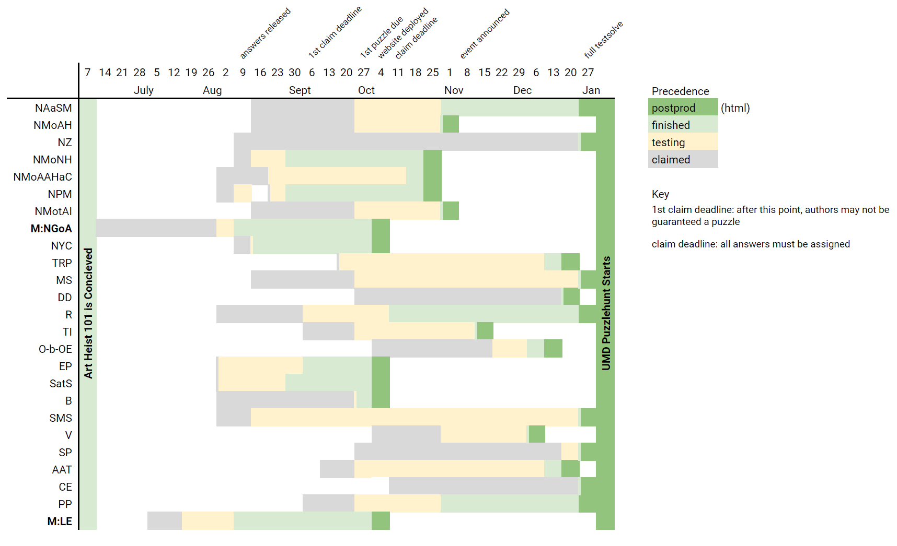
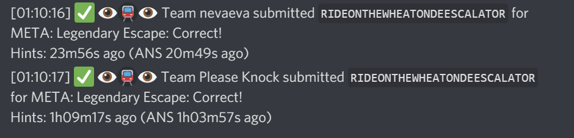
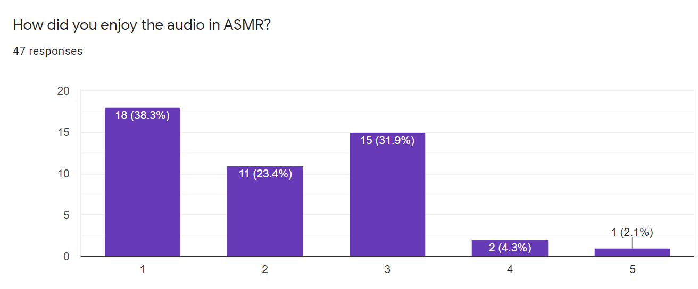

Wrap-Up
Wrap-Up
We should have known that pulling off an Art Heist was never going to be easy.
Congratulations to one of us is not a 🐍! After they BAROQUE OUT GINEVRA DE BENCI, they expertly navigated the area’s public transportation system and successfully escaped the cops by taking a RIDE ON THE WHEATON DE-ESCALATOR! They completed the heist at 3:24 am EST on Sunday, January 3rd.
Minecraft Random Seed Any% (Dream Luck) was the first UMD team to solve the final metapuzzle. They finished at 12:47 am EST on Tuesday, January 5th.
We also want to shout out Turtle Curlers for being the only team to solve all 25 puzzles without any hints. Additionally, Elemental Guessing Machine, ClueCurio, 🐱🐱🐱 cAT MEow 🐈🐈🐈, Tiralmo, Sakharov's Fourth Idea and ! finished the event without using any hints. Magic School Bus was the only team to finish with the minimum number of solves (19).
Eggplant Parms were the first team to finish National Gallery of Art.
In total, 88 teams solved the final metapuzzle, with 44 teams solving all 25 puzzles. 5 UMD teams finished the event and 3 UMD teams solved all 25 puzzles. In addition, 259 teams solved at least 1 puzzle and 193 teams finished the first round!
We hope you enjoyed the event! Please consider filling out our feedback form.
Story
The Ginevra de’ Benci portrait is also painted on the reverse side! The bottom of the painting was also removed at some point.
Solvers were sent an email from their UMD professor about a class field trip to D.C. for their group final project. Upon arriving in D.C., they looked through different D.C. museums trying to find where the rest of their class was. They then arrived at the National Gallery of Art, where it was revealed that the class was ARTH101. In the first round metapuzzle, teams came up with their final project idea and BAROQUE OUT GINEVRA DE BENCI. In a twist, their final project was to steal the Leonardo da Vinci painting for their class ART Heists 101.
In the second round, solvers went around to different parts of the museum to PRIME GALLERIES for the heist. In the final metapuzzle, teams grabbed the painting while being pursued by security. They then escaped through the D.C. metro system, finally quelling tensions when they took a RIDE ON THE WHEATON DE-ESCALATOR.
Structure
We wanted to ramp up the difficulty of the UMD Puzzlehunt from our past puzzlehunts. Because of this, we adopted a two-round structure where the first round had “easy” puzzles and ended with a plot twist. The second round was the main event with harder puzzles.
Our unlock system was pretty simple. At any point in the first round, only three puzzles would be unlocked. This continued into the start of the second round.
In the second round, there were two instances when teams would unlock two puzzles at once. We deliberately unlocked an “easy” puzzle with a “hard” puzzle, so that teams would not get stuck or overwhelmed by these unlocks. (This is also why National Zoo was one of the first unlocks in round one.) These two pairs were: Tactile Inference/Off-by-One Error and Saintly Professions/ASMR Audio Tour. In practice, the first pair seemed to work well, but Saintly Professions turned out to be more difficult to break into than expected. The last two puzzles in round two were placed to help teams get to the finish line. We think this placement worked out pretty well.
Goals and Reflections
Philosophy
After writing several in-person puzzlehunts exclusively for UMD students, we wanted to take advantage of the transition to an online hunt by opening up the hunt to the public and having it run longer. As such, we wanted to appeal to a wider audience by incorporating various puzzle genres and topics. This would also give many long-time writers a chance to explore more difficult/complex concepts.
As a UMD club, we wanted to spotlight the local museums in nearby D.C., including the Smithsonian museums and the iconic National Gallery of Art. We also wanted to make each museum puzzle educational and strongly themed.
At the same time, because of the art heist story, we wanted to create an identity of art-themed puzzles in contrast to more STEM/online-culture oriented hunts that we participated in. Since a few of our puzzles would feature well-known artists/works, we were careful to coordinate and make sure works were not referenced twice. Writing multiple puzzles that highlight art/artists presents the problem of over-representing Western male artists. As an event with educational themes, we had the opportunity to introduce more diverse artists, and we wish we reached a better balance between representation and recognizability/solvability.
Difficulty
We are aiming for UMD Puzzlehunt to be easier than* Puzzle Potluck.
-FAQ page
Our original plan was to bridge the difficulty between previous UMD Puzzlehunts and other online puzzlehunts. But considering the length and difficulty of our metapuzzles alone, we may have been doomed to a much harder hunt from the start. Of course we didn’t think our puzzles were easy, but no individual piece of testsolver feedback prepared us for how challenging the hunt would be overall.
As a consequence, we advertised the hunt with a drastic underestimate of difficulty, and teams understandably invested a lot more time into the hunt than they expected. We’re very grateful for the positive reception despite this.
Ultimately, we’re glad we landed in a difficulty range between Puzzle Potluck and Teammate Hunt. There haven’t been many events that fill this gap in difficulty, so we’re glad we could offer something unique. We also had a few teams use this event to test their Mystery Hunt tech and comment that it was a good warm-up, which we’re happy about.
A common sticking point in our puzzles turned out to be insufficient clueing, rather than “difficulty.” A few steps come to mind as obscure and would have been better off more explicitly clued. For example, the “a-has” for New York Counterpoint and Saintly Professions were purely flavortext based. These puzzles could have been improved by adding a simple layer that produces an explicit cluephrase, since these puzzles were not long otherwise.
Furthermore, “Keep going!” messages were relatively sparse in the second round. We confirmed phrases that may have looked like an answer but were actually clues. We also confirmed some select phrases that might appear strange. This would limit using midphrase checking to skip parts of any puzzle. Ultimately, these decisions were still somewhat arbitrary, and there were cases where we regret not adding a “Keep going!”
Team
A total of eleven writers contributed to ART Heist 101. However, only about five members were actively involved with internal discussions about the big picture of the event. In previous semesters, it was easier to facilitate input between every member of the staff during weekly meetings. But because this event had to be written remotely, we feel that decisions may have lacked transparency in some areas as many discussions were done casually between this close group. Despite these complications, writers were generally very responsible with their deadlines. We are very thankful for the time and diligence of our writers!
One advantage of having a small “central” team was that we were able to share a unified vision for how the event should come out. In addition, we feel that this allowed UMD Puzzlehunt to reflect the personalities/humor of the writing staff. Of course, there was a lot of workload placed on individual members during the course of writing this event, and having a larger active team would be ideal for any other similar-sized event.
Audience
UMD Puzzlehunt started as a local, in-person, one-afternoon event catering only to UMD students. Typically, a couple dozen teams would attend and about two teams would finish. Furthermore, these events would be limited by the timeslots we could reserve for conference rooms.
Even though we wanted ART Heist 101 to be a more challenging puzzlehunt than our previous ones, we wanted to make sure our local audience of UMD students felt included. We designed our metapuzzles with references to the local area because we wanted to create something uniquely connected to our area. UMD students are often casual solvers, so we tried to be mindful of how the increased difficulty would affect them. We proposed ideas such as including a fully separated UMD leaderboard, a private UMD leaderboard only viewable to UMD teams, and giving UMD teams more hints. Even though the event would last longer and theoretically more teams could see the entire hunt, we wondered how we could maintain engagement from teams who may be new to bigger hunts.
We ended up giving UMD teams one early hint token at 4:00 pm on Saturday. Throughout the week, we did not see many teams run out of hints, so we did not give any additional tokens. We were so glad to see UMD teams solving throughout the entire week, and congratulations to all the finishers. Fear the Turtle!
Writing
June 8, 2020: Text from Grant to Dawson
Metapuzzles/Theme
We first started floating around ideas for UMD Puzzlehunt through casual conversation in June. The art heist theme was a hit as soon as it was brought up as the staff consisted of a few art enthusiasts. Stealing the Ginevra de Benci came soon after, since it was a local spin on the Mona Lisa cliche. Then, when we noticed that the National Gallery of Art floorplan could act as a crossword, we were excited to include this as a central part of the story and structure. Spotlighting each of the museums on the National Mall and the zoo was ingrained into our story and puzzles from this point on.
The PRIME GALLERIES extraction was the first puzzle mechanic floated for this event, almost right after the National Gallery of Art crossword was proposed. Figuring out how to make the puzzle into a metapuzzle and how it would fit into the narrative of the story took quite a bit longer. Throughout June and July, talks stalled, but the final metapuzzle was eventually proposed in order to create a larger story arc. The final metapuzzle and the feeder answer list was finished in late July, with the NGA metapuzzle following in early August.
The NGA meta was designed with the feeder puzzle themes in mind. We knew we wanted to have each feeder spotlight a different location, so the answers were designed to relate to a work of art and a D.C. location. The list of artists used in the grid fixed what answers we could choose. Consequently, each feeder answer had very little flexibility, but they were thematic to their respective locations. In contrast, the main round had feeder answers only constrained by a couple of letters each, with the least constrained only being forced to have one particular letter. Apart from the middle answers of each Metro line chain, answers were flexible enough that authors could choose from a reasonably large list. “Heisting” is a much more nebulous concept and removed thematic restrictions for puzzle writing.
Story
Our approach to the story was to have the metapuzzle questions and answers do all the necessary communication. We figured that a majority of solvers would want to focus on puzzles, not the story. The National Gallery of Art would pose the first plot question (i.e why we are in the NGA in the first place?) and solving it would lead to the inciting incident, leading to the expansive second round. Similarly, the final metapuzzle serves as a question of resolution to the entire second round.
At the same time, we wanted the written story to add to the event, if anyone wanted to explore it. Any other narrative elements would be minimal and optional. We found that the one-sentence snippets of story under each round title did an effective job at capturing anyone who was curious, while not being distracting. The specific idea of an inconspicuous field trip/final project for the exposition was suggested the week before the event.
Puzzles
In typical years, UMD writers are given almost full autonomy for their first drafts, and this year was similar. A list of puzzle answers were sent to writers in early August. All writers could choose an answer from the list or ask the metapuzzle authors for additional answer choices. Authors were told to write round one puzzles to be easier and thematic to the museums. Organization/tracking was done through Google Sheets. As soon as a first draft was completed, it was given an initial testsolve. At this point, the puzzles would be given edits or any suggestions that could flesh them out. When the puzzle is finished with revisions, it would be open for subsequent testsolves and edits.
Timeline
Testsolving
The biggest detriment to having a small active team (and any writing group will probably agree) is the lack of testsolving. Without consistent meetings, it was very difficult to encourage testsolves, with much of the testing/editing done solo. We are incredibly thankful to all the testsolvers that reached out to us and offered their time to us. Every puzzle eventually met a threshold of two hint-less testsolves before they were finalized. Our event had one full testsolve that was conducted the weekend before the event. While almost every puzzle had been finalized at this point, it did result in a handful of changes/corrections.
Operations
Website
The UMD Puzzlehunt website is essentially a reskinned version of the dp branch of gph-site. The “Divisions” functionality of DP was the primary reason why we chose it over other options. No members of UMD staff had prior experience with web development tools, so we are extremely grateful for this resource since it was easy to understand and set up. Naveen set up the hosting on Heroku, and Dawson took responsibility for the frontend (HTML setting, Puzzle page) work, as well as any miscellaneous functionality changes.
The ‘Tech’ section of the DP Puzzle Hunt wrap-up by betaveros was a big help. Additionally, a more comprehensive discussion on gph-site functionality/capabilities can be found on the Teammate Hunt wrap-up.
Hints
The hint infrastructure built into gph-site let individual staff claim hint requests as they came in. It also displays previous hints that were given for that particular puzzle.
We had six responders throughout the event, with five based in the greater D.C. area and one based in California. We felt that we were generally able to cover all 24 hours of the day, but we apologize if any hints/email responses were excessively delayed. We also did not originally plan to answer hints until the next Saturday. A number of teams in the feedback form expressed that they thought more frequent hints would have been better. To counteract any delays (as well as the lack of tokens), we were relatively more generous with hints, email follow ups, and hint refunds as time went on.
Two email accounts were used during this event. One was connected to the website infrastructure and sent the automatic team sign-up and hint response emails. The other was used for any manual responses. We did not experience any problems at all with this setup until Friday morning when the automatic account reached its sending limit. Email was the last thing we really thought about operationally, and we’re pretty lucky things went well for the most part. However, we were very conservative with any mass email notifications, which is certainly not ideal.
Future
Most of our main contributors (including Dawson, Josh F, Sam and Ryan), will probably not be UMD students after this year, and thus we cannot say if you can expect future UMD Puzzlehunts to be similar to this one.
However, with all the encouraging words, the main contributors will probably stick together and continue writing puzzlehunts in the future. When? No idea, but we’ll make sure to let everyone know. It’ll certainly be tough to meet the expectations we’ve set for ourselves since our current group has two main limitations: size and web development experience, but we’re excited to see what we can accomplish.
This website will be left up indefinitely. With the exception of Recycled, all puzzles should remain solvable as they were during the live event.
Thank you for reading!
Credits
Hint Staff: Dawson Do, Matt Du, Josh Fernandes, Sam Lam, Ryan Thomas, Grant Yang
Editor: Dawson Do
Authors: Josh Batkhan, Dawson Do, Josh Fernandes, Sahil Kochar, Sam Lam, Jessica Nah, Naveen Raman, Pratik Rathore, Ryan Thomas, Jeremy Tsai and Grant Yang
Story: Ryan Thomas and Grant Yang
Art: Angel Wen
Website: Dawson Do and Naveen Raman
Testsolvers: Matt Du, Philip Z Loh, Vincent Ly, Bob Ma and Happyjon
Special Thanks: The Diamondback, The Bark, and Galactic Puzzle Hunt/DP Puzzle Hunt for their open-source website
Many writers have been with the club for several years, and the only reason why the puzzles here are as polished as they are is because of previous leaders/editors of the UMD Puzzle Club. ART Heist 101 could not have been this successful without their influence.
Appendix
Playlist
Here’s a Spotify playlist that we curated that roughly outlines the ART Heist 101 experience! Not all puzzles represented and some interludes included for flavor.
Portrait Gallery
We made a slideshow of all your submissions! Check them out at the UMD Puzzlehunt Portrait Gallery.
Stats
Progression for all Finishers, the Bigboard and Stats page are now all public! There are also detailed statistics for every puzzle.
In these graphs, teams advance to 25 solves once they solve final metapuzzle.
Misremembered Apple finished the hunt with only 7 incorrect guesses. Ange Management solved all 25 puzzles with only 23 incorrect guesses.
We also want to spotlight nevaeva and Please Knock for finishing the final metapuzzle 1 second apart.

In total, we received just over 1200 hint requests. Our average response time was 10 minutes 21 seconds, and our median response time was 4 minutes 56 seconds.
F-bombs in guesses: 114
Notable Guesses
National Museum of American History
- BJORKPARTY (FlyingSolo): I could totally party to Hyperballad -Dawson
- CLAPWORTHY (Unable To Solve)
- PECANKINGSHARK (whereswaldo)
- TIGERKING (multiple teams)
- PIECRUSTMLADY (Six Down)
- ALIBRARYSNOB (Puppy Puzzlers)
- BROKEOUTGIN (TEAMX)
- APPRECIATEDART (Team to be named at a later date)
- PRIMEDALLERGIES (Rob Is Bad At Catan)
- ADDMORESPARKLE (Rob Is Bad At Catan)
- EACHISAHOTMAIL (Evading Class of /r/PictureGame)
- BAROQUEEVEN (TEAMX): I know this is probably a pun on “broke even”, but I couldn’t help but see “baro-que even” as a bilingual expression of frustration) -Sam
- OOPS (The C@r@line Syzygy)
- STIMULANTLOTION (Baymax)
- PLEASEREPLYCOLONPLEADINGUNDERSCOREFACECOLON (Keep Puzzling): Sorry :((
- NO (simps)
- BECOMELAWNSHRUB (Track Coconut Pizza Hut)
- DEADINSIDE (We Faked the Mars Landing)
- DIEINSIDE (Les Gaulois)
- WEABOOBULLYINFACT (Plurmorant)
- ISUCKATMATHOKAY (Ant Colony)
- ROCKETLAUNCH (Please Knock)
- KLINGON (Eggplant Parms, DisCardinality, Humdrums): So sorry for this -Dawson
- GODIMSOMADILITERALLYNAMEDTHEDISCORDCHANNELNFR (i am betraying my university)
- MAXKEEPSGUESSINGTHECLUEPHRASE (NullPointerException)
- GREVIOUSBODILYHARM (17th Shard)
- WEDONTWANTTOKEEPGOINGCANTHATJUSTBETHEANSWER (Moose Capers*)
- SHAMROCKSHAKE (We Can't Hear You, You're on Mute!)
- PIKASHOCK (Keep Puzzling)
- NOWADDBELCH (Belmonsters)
- MARRYINGYOUNGERSISTER (Flamingo Bellagio)
- HIDEONTHEWHEATONDOWNESCALATOR (Löded Diper, nevaeva)
- RIDEUNTILWEGETONDEESCALATOR (Nation-Exploring Students)
Q&A
How did your team expand so much in terms of crafting a hunt that stepped up so much from last year?
Dawson: The team is actually smaller in every regard: fewer writers total and fewer members who could find the time to put in significant hours for testing. Despite this, I’m very grateful to our writers who followed our deadlines and were reachable throughout. This made working with a small team go much smoother.
As we mentioned above, the difference between this event and previous ones was a change in philosophy and target audience. Our previous events were never designed to last more than four hours and only for UMD students. Our April 2020 puzzlehunt caught a small amount of public attention since we ended up moving it fully online; and since this event was also going to be fully online, we jumped at the opportunity to produce something more impressive.
How do you guys go about writing puzzles?
Dawson: I think to myself, “Wouldn’t it be funny if…” Sometimes, it makes its way into a small part of the puzzle (like the PRGM equation or the extra-long extraction clue in Tactile Inference); and sometimes, it’s the entire concept (Recycled). I like it when an “a-ha” also serves a punchline, if that makes sense.
Sam: Diving down a deep Wikipedia rabbit hole can really get me thinking sometimes. If I’m lucky, it all comes at once. If I’m not lucky, I’ll never get around to making something work. I tend to keep my layers as simple as possible and favor recursion over extended sequences of steps.
Grant: Schadenfreude. But actually, I like the aesthetic of puzzles that don’t look typical/vanilla, which led to some heavy gruntwork. Sorry about that! I have a strong mental image of how I want the puzzle to appear when solving and write to that.
Ryan: Everytime I think of a puzzle idea (even if it’s not good or incomplete), I write it down on a list. When given a list of feeders to write for, I skim my list for any ideas that thematically relate an answer. Otherwise, I just try to think of what makes an answer mechanically or thematically unique and write around that.
Josh F: I definitely second Ryan’s idea of having a list. Some of my topics are fleshed out mechanics; others are just a single interesting thing. If I ever need inspiration, I just skim over it; and typically one will inspire me. A lot are word manipulations, as I love writing those kinds of puzzles. Sad I missed out on including any of those in this hunt.
Any tips on writing puzzles?
Grant: Write puzzles on topics you like/find interesting. Nothing is worse than editing your fifth version of country flag identification (unless you like that, freak).
Dawson: Always share anything you’ve made! (A warning about what Grant said: some things you’ll never be able to look at again in the same way. Nonetheless, things you like is a good start.)
Sam: Do a lot of them. Expand your horizons.
Josh F: Ask others for help! Co-writing puzzles can be a lot of fun, and if you have a draft, other people can really give you good feedback. Don’t be afraid to have your puzzle change.
Ryan: Easy isn’t bad. Difficulty is meant to reward solvers for overcoming a challenge, not waste their time or make them feel stupid.
What was your favorite puzzle to write?
Dawson: Legendary Escape and National Gallery of Art. I really like the freedom of coming up with pun answers. Natural History was fun too but in a masochistic way.
Sam: I love classical music and I love puzzles. New York Counterpoint is a music-themed puzzle. It was a fun puzzle to write.
Grant: National Gallery of Art because it combined art history and what I thought was a cool looking end mechanic.
Ryan: All my puzzles required a lot of time to write, which was pretty annoying, but I’m equally happy with how they all turned out.
Josh F: I only wrote two puzzles, but I really liked constructing the grid for Crazy Eights. Puzzle ideas/extract text/grid shape all changed as I was designing, so it really felt like a logic puzzle to place all the words and meet the constraints. When I realized I had Jupiter and Saturn in the wrong order, I cried since I had to redesign an entire side of the grid.
What was your favorite puzzle to watch us solve?
Dawson: Legendary Escape and Recycled. We all had a good laugh when Evading Class of /r/PictureGame found and solved minipuzzles I wrote in 2019 for the UMD First-Look Fair.
Grant: Legendary Escape, all of us get super pumped when we see a team get TRANSFERPT
Sam: Crazy Eights was one of the more interesting to look at visually. Sheets often had bright colors and highlighted cells everywhere.
Ryan: Severely Mangled Semantics. The minis let me witness a lot of small ahas.
Josh F: National Museum of African American History and Culture. I liked seeing all the braiding representations.
What are your favourite vanilla puzzle games (sudoku, slitherlinks, etc.)?
Sam: Slitherlink
Ryan: Nonograms
Angel: Jigsaw puzzles
Grant: Do cryptics count?
Dawson: Firefly/Hotaru Beam
Jessica: Nonograms or minesweeper
Josh F: Variation logic puzzles (re: National Zoo)
Did you start the SMS anime puzzle with 'My Roommate Is a Cat' in mind? Would you recommend it?
Ryan: The minis for SMS originally had less thematic answers. When I had to change SMS’s extraction, I had to rewrite all the minis. I decided to reselect AFK’s answer first because I wanted the answer to be the title of an anime and knew finding one to fit the puzzle’s constraints would be quite a feat. I’d never heard of “My Roommate Is a Cat” before I found it on a long list of random anime titles, but I watched it in its entirety while I rewrote the minis. As far as slice of life anime go, I think it’s pretty good.
How many other UMDs did you ask before finding an accomplice?
Dawson: Just one! I just asked the staff at The Bark nicely and explained what I wanted to do. Funnily enough, all of the puzzles for The Bark were finalized and set to publish before I even coordinated with The Diamondback. I’m glad/lucky it all came together!
How online is the Evening Posts writer?
Dawson: Very? Haven’t met other puzzle people who frequent the same corners of the internet that I do, though.
How does the person who designed ASMR sleep at night?
Dawson: Perhaps I went a bit too far on this one, but it wasn’t me who you had the pleasure of listening to.
Grant: Dawson sleeps fine